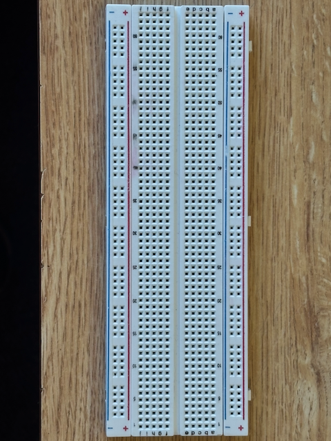
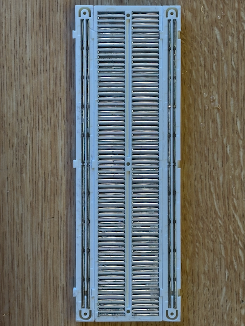
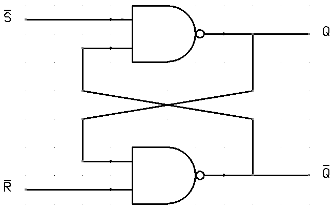

74Sim is a browser-based breadboard simulator for 74-series and other digital logic chips, designed for individuals with an intermediate to advanced knowledge of digital logic technology.
What is 74Sim?
74Sim lets you design, wire, and test digital logic circuits directly in your browser no hardware, no soldering iron, and no proprietary software required. The interface models a real solderless breadboard: chips straddle the center channel, pins land in numbered columns, and wires connect column to column exactly as they would on a physical board.
The simulator is event-driven. Every time you toggle a switch or a chip output changes state, the signal propagates through connected wires in real time, updating LEDs, 7-segment displays, and downstream chip inputs automatically. What you see on screen matches what would appear on an oscilloscope or logic probe in a lab.
Supported chips
74Sim includes a broad library of 74-series ICs spanning several logic families (74HC, 74LS, 74HCT, and others). The library covers:
Multiplexers and decoders data selectors, address decoders, demultiplexers (74151, 74138, 74154...)
Arithmetic adders, comparators (7483, 7485...)
Transceivers and buffers tri-state, bidirectional bus drivers (74245, 74244...)
Each chip in the Chip Reference includes a pinout diagram, pin descriptions, and a guide section covering its operation, truth tables, and typical applications. Use the search bar in Chip Reference → Search to find any chip by number, function, or keyword.
Components and I/O
Beyond chips, the simulator provides a set of input and output components:
Inputs momentary pushbuttons and toggle switches for driving logic HIGH or LOW manually.
Outputs single LEDs (any color) for monitoring individual signals, and 7-segment displays for visualizing BCD or hex output from counters and decoders.
Passives pull up and pull down resistors for setting default logic levels on floating inputs.
Power rails VCC and GND bus connectors that tie the breadboard power rails to the simulation supply.
Typical workflow
Most circuits follow this pattern:
Add a chip from the toolbar and place it on the breadboard.
Connect VCC and GND to the chip's power pins the simulation will not drive outputs correctly without power.
Wire inputs (switches, other chip outputs) to the chip's logic inputs.
Wire the chip's outputs to LEDs, 7-segment displays, or other chip inputs.
Toggle your input switches and observe the outputs update in real time.
Circuits are saved automatically in your browser's local storage. You can also save, load, and share circuits as JSON files using the Save / Load buttons in the simulator toolbar.
Getting started
Open the Simulator to begin. The toolbar at the top lets you add chips, input components (switches, buttons), output components (LEDs, 7-segment displays), resistors, and wires.
If you are new to 74Sim, the On-Ramp is a short guided introduction to the interface. The How a Breadboard Works article explains the physical layout the simulator is modeled on. Browse Example Projects for pre-built circuits you can open directly in the simulator.
A breadboard is a reusable prototyping board made up of a grid of holes, with metal spring clips electronically connecting sections of the board, no soldering required.
Physical layout
The front of the breadboard shows labeled rows and columns of holes. The back reveals the metal clips that make the connections.


How holes connect
There are two connection zones:
Main grid: columns of 5 holes (rows A to E on top, F to J on bottom). All holes in the same column and the same half are connected together. The center channel separates the two halves.
Power rails: long rows along each side, marked + and −. Each rail runs the full length of the board. Connect your power supply here and tap power from any hole along it.
DIP (Dual In-line Package) chips straddle the center channel. Each pin connects to its own 5-hole column, so you can attach up to 4 other wires or components to a single chip pin.
74 series chips are logic chips designed to perform specific logical functions: AND, OR, NAND, flip-flops, counters, and more. The number in the chip name determines its logical function; the letters indicate the family.
A full list of 74 series chips can be found at build-electronic-circuits.com. 74Sim supports the chips shown in the chip picker in the toolbar.
Concepts
Chip Families
74 Series Chip Families
The letters between "74" and the function number indicate which family a chip belongs to. Families differ in transistor technology, supply voltage, speed, power consumption, and input/output behavior.
74HC combines the speed of TTL with the very low power consumption of CMOS. Pin arrangements are identical to 74LS but input thresholds differ, so a 74LS output cannot reliably drive a 74HC input.
Supply: 2 to 6V, suitable for battery powered designs.
Inputs have very high impedance. All unused inputs must be tied to +Vs or GND.
Outputs can sink and source ~4 mA (logic) or up to ~20 mA (max).
Fan-out: 50+ 74HC inputs, but only 10 74LS inputs.
Propagation delay: ~10 ns. Max frequency: ~25 MHz.
Static sensitivity: CMOS inputs are sensitive to ESD. Earth yourself before handling.
74HCT, CMOS with TTL compatible inputs
74HCT is a variant of 74HC whose input thresholds accept the voltage levels produced by 74LS TTL outputs. Use it when mixing 74LS and 74HC logic in the same circuit.
Supply: 5V ±0.5V, a regulated supply is recommended.
All other characteristics are the same as 74HC.
Recommendation: For most new projects, choose 74HC. It works from 2 to 6V (battery friendly), has excellent noise immunity, and very low idle power. Only switch to 74HCT when you need TTL compatible inputs, or to 74LS for existing 5V TTL systems.
Comparison
Property
74LS
74HC
74HCT
Technology
Bipolar TTL
CMOS
CMOS
Supply voltage
5V ±0.25V
2 to 6V
5V ±0.5V
Output sink current
16 mA
~4 mA / 20 mA max
~4 mA / 20 mA max
Output source current
~2 mA
~4 mA / 20 mA max
~4 mA / 20 mA max
Fan-out (same family)
10 inputs
50+ inputs
50+ inputs
Propagation delay
~10 ns
~10 ns
~10 ns
Max frequency
~35 MHz
~25 MHz
~25 MHz
Idle power
A few mW
A few μW
A few μW
Unused inputs
Float HIGH, tie to +Vs recommended
Must tie to +Vs or GND
Must tie to +Vs or GND
Accepts 74LS output?
Yes
No (use pull up or 74HCT)
Yes
Battery-friendly?
No
Yes
No
Static sensitive?
No
Yes
Yes
Mixing families
It is best to build a circuit using a single logic family. If mixing is unavoidable, the power supply must be within the valid range of every family used.
When a 74LS output needs to drive a 74HC input, connect a 2.2 kΩ pull up resistor between the +5V supply and the input pin.
Concepts
Floating vs Grounded
Floating vs Grounded
Leaving a logic input unconnected is not the same as tying it to GND. A pin with nothing driving it is floating: its voltage is set by whatever stray currents and capacitive coupling happen to reach it, not by your circuit. The result is an input that reads HIGH, LOW, or oscillates between the two depending on the time of day, the length of the wire, and whether your hand is nearby.
What is a floating input?
Logic gate inputs are very high impedance typically megohms for TTL, gigohms for CMOS. That high impedance is what makes them cheap to drive, but it also means the pin has no preferred voltage of its own. A few nanoamps of leakage, a millivolt of induced noise from the 60 Hz mains, or the capacitance between the wire and your finger is enough to swing the pin across the logic threshold.
The image below shows a 2-input OR gate with one input left dangling. You might expect the dangling pin to read LOW it isn't connected to anything, after all but in practice it can sit anywhere, and the gate's output is whatever the noise on that pin decides moment to moment.
This is the kind of bug that survives every bench test and then fails the moment the board is mounted next to a motor or a fluorescent light. The gate isn't broken; an undriven input is just an antenna.
Pull down and pull up resistors
The fix is to give the pin a defined idle level using a weak resistor to a rail. A pull down resistor to GND holds the input LOW until something actively drives it HIGH; a pull up to VCC does the opposite. The resistor is weak enough (typically 1 kΩ to 100 kΩ) that any real driver wins easily, but strong enough to swamp the stray currents that cause floating.
Choosing the value is a tradeoff. A smaller resistor (1 10 kΩ) gives stronger noise immunity but draws more current when the input is driven the other way; a larger one (47 100 kΩ) saves power but leaves the pin more susceptible to interference on long wires. For most breadboard work, 10 kΩ is a safe default.
The images below show an AND gate with floating inputs on the left, and the same gate with pull down resistors on the right:
Behavior in 74-series chips
The two families behave very differently when a pin is left floating, and the difference matters.
74LS (TTL) inputs tend to float HIGH. The bipolar input stage has a built-in path to VCC through the input transistor, so an undriven pin pulls itself up to roughly 1.4 V above the LOW threshold, and usually read as a logic HIGH. This is the source of the classic bug: a forgotten wire silently enables a gate that should be disabled, the circuit "almost works", and you spend an afternoon chasing it.
74HC and 74HCT (CMOS) inputs have no such bias. Their input impedance is essentially infinite, so a floating pin can sit at any voltage at all. Worse, if the voltage lingers near the threshold, both the n-channel and p-channel transistors in the input buffer conduct simultaneously, drawing tens of milliamps and heating the chip. CMOS datasheets are explicit on this point: every unused input must be tied to VCC or GND.
The rule for both families is the same, only the consequence of breaking it differs: drive every input to a defined level. Tie unused gate inputs to GND or VCC directly (no resistor needed for permanently unused inputs), and use pull ups or pull downs on inputs that are sometimes driven and sometimes not buttons, jumpers, tri-state buses.
Resources
Example Projects
Example Projects
Click any example below to open it directly in the simulator.
Loading examples…
Resources
Keybinds
Keybinds
Keyboard shortcuts available while the simulator is open.
Editing
Shortcut
Action
Ctrl + C
Copy selected components
Ctrl + X
Cut selected components
Ctrl + V
Paste
Ctrl + A
Select all
Ctrl + Z
Undo
Files
Shortcut
Action
Ctrl + S
Save circuit to local file
Ctrl + L
Load circuit from computer
Concepts
SPICE Simulator
SPICE Simulator
Under the hood, 74Sim ships a custom SPICE class analog engine. This page explains how a circuit on the breadboard becomes math, and how that math becomes the voltages, currents, and LED brightness you see on the screen. The top of the page is conceptual; later sections drill into the equations and constants used by the real code.
How a SPICE simulator thinks
Every SPICE style simulator does the same three things in a loop:
Turn the circuit into a graph: identify every electrically connected group of holes (a net) and every component that bridges two nets.
Have each component contribute a small pattern of numbers, called a stamp, into a single global linear system Ax = z. Resistors stamp a conductance; voltage sources stamp a current; capacitors stamp a time discretised approximation; chip outputs stamp a Norton equivalent driver.
Solve the linear system for every node voltage at this instant, then use those voltages to update gate logic and (for transient effects) to advance time, then repeat until nothing changes or the user stops.
Concretely, when any component is placed, moved, wired, or toggled, 74Sim runs the following pipeline synchronously before the next frame is rendered:
Build the netlist: flood-fill the breadboard to identify nets.
Tag power nodes: mark VCC (5 V) and GND (0 V); detect VCC‑GND shorts.
Iterative gate + MNA loop: evaluate chip logic, record output drive states, solve the MNA system, and repeat until the circuit settles (up to 30 passes).
Compute derived quantities: per branch resistor, capacitor, and diode currents; per net current sums.
A chip in 74Sim has two completely separate representations: a structural description (pure data) and a behavioural evaluator (a function). The simulator does not know what a NAND is from the data alone; it only knows that a particular chip type has an evaluator that, when called, reads its input pin voltages and writes drive states to its output pins.
The structural side is a plain JavaScript object. Here is the real definition of the 7400 (Quad 2 input NAND):
The behavioural side lives in a per chip evaluator function. For a combinational chip like the 7400, the evaluator simply iterates the gates array, reads each input pin as a bit (HIGH if the solved voltage is above the family threshold VTH, otherwise LOW), computes the boolean, and writes the result to the output pin's drive state.
Sequential chips (flip-flops, counters, shift registers) do the same but additionally carry per instance state in a ffState map. Edge detection is performed by comparing the current clock input bit against a stored prevClk; a rising or falling edge is recognised exactly once per transition, even though the gate evaluator may be called many times per simulation step.
Every output pin is tagged with one of three drive states after each gate evaluation:
Drive state
What it means electrically
Used for
PUSH_PULL
Norton source pulling the pin's net toward Vdrive (0 V or 5 V) through ROUT.
Normal totem-pole output driving HIGH or LOW.
SINK_ONLY
Conductance G = 1/ROUT from the pin's net to GND. The pin can only pull the net low.
Open collector output actively sinking current.
HIGH_Z
No stamp at all; the pin is electrically absent. Open collector pins in this state receive an implicit 4.7 kΩ pull up to VCC.
Tristate output disabled; open collector output off.
Drive states are kept across calls to the simulator's main evaluate() function, so the next pass starts with the previous step's drives already in place. This is essential for feedback paths like a ripple counter, where a chip's own output feeds back to its clock or enable pin.
From breadboard to nets
Before any math runs, the netlist builder converts the spatial layout into a graph of electrical nets using a BFS flood-fill over connected holes:
Every wire segment merges the two holes it spans into the same net.
Breadboard internal connections (the 5 hole columns and power rail rows) are implicit edges traversed by the BFS.
Component boundary pairs: 2 pin passives (resistors, LEDs, capacitors, diodes) act as net boundaries. Their two pins are never merged. The component sits between two distinct nets and carries current across them during the solve.
Closed switches and pressed buttons are recorded as conducting pairs. Their endpoints stay on separate nets (so VCC/GND identity does not propagate through a switch), but the simulator stamps a near-zero resistance (0.01 Ω) between them so voltage conducts freely.
Each net is annotated with isVCC / isGND when any of its holes belongs to a power rail.
Modified Nodal Analysis: the math
74Sim's analog core is a Modified Nodal Analysis (MNA) engine, the same mathematical foundation used by SPICE. The circuit is modelled as a single linear system:
A x = z
where x is the unknown vector of node voltages, A is the conductance matrix, and z is the injected current vector. GND is the reference node (index 0, excluded from the matrix), so for a circuit with N+1 nets the matrix is N×N.
Why this works: applying Kirchhoff's Current Law at every non-reference node says "the sum of currents leaving the node equals zero." Each branch contributes a current that, by Ohm's law, is a linear function of node voltages (I = G × ΔV for a resistor, plus an offset for any current source). Collecting the equations for all N nodes gives exactly the matrix form above.
Component stamps
Each component contributes to A and z by a standard stamp, a small fixed pattern of additions:
Component
Stamp
Resistor
Conductance G = 1/R between the two end-nodes i, j: Aii += G, Ajj += G, Aij −= G, Aji −= G.
VCC rail
Norton equivalent: G = 1/2.5 Ω (0.4 S), I = 5 V × G = 2 A. Equivalent to a perfect 5 V source with 2.5 Ω series resistance, giving a 2 A short-circuit limit.
Capacitor
Backward Euler companion model: Geq = C/dt as a conductance, plus a Norton current source Ieq = Geq × Vprev injected into z. See How capacitance is modelled.
Norton equivalent: G = 1/ROUT stamped on the pin's net, plus a current I = Vdrive/ROUT injected into z. ROUT depends on the chip family (714 Ω for 74LS, 150 Ω for 74HC/HCT), limiting max drive current to ~7 mA or ~33 mA respectively.
Chip output (SINK_ONLY)
Conductance G = 1/ROUT from the pin's net to GND, pulling it low. No current source. The pin can only sink, not source.
Chip output (HIGH_Z)
No stamp; the pin is electrically disconnected. Open collector outputs in this state receive an implicit 4.7 kΩ pull up to VCC.
TTL floating input
For 74LS only: an undriven chip input pin receives a 100 kΩ pull up to VCC, causing it to read HIGH, matching real 74LS behaviour. 74HC/HCT inputs receive no pull up and stay truly floating.
Closed switch
G = 100 S (0.01 Ω) between the two end-nodes, effectively an ideal conductor.
A small leak conductance of 10−9 S is added to every diagonal entry of A. This prevents the matrix from going singular when a node has no real conductance path (for example, a wire segment connected to nothing) and costs nothing physically. 10−9 S corresponds to 1 GΩ.
How voltages are computed
Once A and z are assembled, the unknown node voltages x are obtained by solving the linear system. 74Sim uses Gaussian elimination with partial column pivoting on a fresh Float64Array backed N×N matrix per pass:
For each column k, find the row with the largest absolute value in column k at or below the diagonal. This is the pivot row.
Swap that row into row k.
Eliminate column k from all rows below k by subtracting an appropriate multiple of row k.
After the matrix is upper triangular, back-substitute from the bottom row up to recover x.
Pivoting matters here because real 74 series circuits mix wildly different impedances on the same matrix: a 100 kΩ pull up sits next to a 33 Ω LED bulk resistor, a 2.5 Ω VCC rail next to a 1 GΩ leak. Pivoting picks the largest available coefficient at each elimination step, which keeps floating point cancellation under control. (Gaussian elimination with partial pivoting)
The result x is one voltage for every non-GND net. Downstream code reads these voltages and classifies each chip input pin as logic HIGH (V ≥ VTH) or LOW (V < VTH) using the family dependent threshold.
How currents are computed
Current is not solved for directly. It is derived from the now-known node voltages on a per branch basis after the linear solve completes:
Resistors and chip outputs: I = (Va − Vb) × G, where G is the branch conductance from the stamp. For a Norton stamped chip output, the effective branch current is I = (Vdrive − Vpin) / ROUT.
Capacitors: I = Geq × (Vnow − Vprev), a discrete approximation of I = C × dV/dt over one time step.
LEDs and diodes: if forward biased, I = (Vanode − Vcathode − VF) / Rinternal; otherwise the leakage current through the off state conductance (~1 μA).
Per net current totals are aggregated by summing the absolute branch currents touching each net. These totals drive the current flow visualisation, set LED brightness (proportional to forward current), and trigger overcurrent warnings when a single net carries more than its rail's share.
How capacitance is modelled
Capacitors are time derivative elements: their current depends on dV/dt, but MNA is a static linear system at one instant in time. SPICE's classic answer is the companion model: replace the capacitor with an equivalent resistor and current source that approximates its behaviour over a finite time step dt.
Geq is stamped exactly like a resistor between the capacitor's two pins; Ieq is injected into z as a current source from one pin to the other. After the solve, Vprev is updated with the new pin to pin voltage and the cycle repeats next step.
Two important properties fall out of this:
DC steady state is correct. When Vnow = Vprev, the Ieq current source exactly cancels the current that Geq would otherwise draw. Net DC current through the capacitor is zero, so it correctly blocks DC.
Backward Euler is unconditionally stable. The capacitor cannot oscillate or blow up regardless of how large dt is. This is a key reason it's the default choice for circuit simulators.
One detail specific to 74Sim: _updateCapacitorState clamps the voltage change per step to MAX_CAP_DV = 0.25 V. This is purely cosmetic. It stretches the visible RC charge curve onto many frames so users can see a capacitor charging instead of snapping to its final voltage in one tick. The math underneath is still backward Euler.
Note: Because backward Euler is unconditionally stable, the simulator can use a fairly coarse time step (up to 50 ms) without numerical blow-up. The adaptive policy in the time stepping section keeps the curve smooth without wasting CPU at steady state.
Nonlinear elements: the two pass diode/LED model
Real diodes are exponential (the Shockley equation), but MNA needs a linear system. SPICE solves this with Newton Raphson iteration, which repeatedly linearises the diode around the current voltage estimate. 74Sim uses a simplified equivalent: two successive solves per evaluate() pass, switching the diode/LED stamps between an off form and an on form based on the first solve's result.
Pass 0, assume all off. Every LED and diode is stamped as a near-open circuit with conductance Goff ≈ 1 μS (1 MΩ). Solve. Inspect each device's anode minus cathode voltage; any device with a positive value greater than its VF is forward biased.
Pass 1, re-stamp the conducting ones. Each forward biased device is re-stamped as a bulk resistance plus a Norton current source that subtracts its forward voltage drop:
LEDs: R = 33 Ω, VF = 2.0 V.
Silicon diodes: R = 10 Ω, VF = 0.7 V.
Solve again. The result is the final node voltages with each diode contributing its drop.
This two pass scheme is mathematically equivalent to a single Newton Raphson iteration of the standard SPICE diode model started from a good initial guess (everything off), and is accurate enough for the 0 to 5 V range these chips operate at. The constants are taken from js/simulator.js: LED_VF, LED_R_INTERNAL, DIODE_VF, DIODE_R_INTERNAL, and LED_G_OFF / DIODE_G_OFF.
Iterative gate + MNA loop
Chip logic and the MNA solver are mutually dependent: gate outputs change A and z, and the solved voltages in turn determine the next round of gate inputs. To resolve this without infinite recursion, the simulator runs an iterative fixed-point loop:
An initial MNA pass is run before any chip evaluates, so feedback wires (e.g. Q→CK on a ripple counter) already carry correct voltages from the previous simulation step.
All chips are evaluated in placement order. Each chip reads its input pin voltages, computes its logic function, and writes output drive states to pinDriveStates.
If any drive state changed, another MNA pass is run and the chip loop repeats. The loop runs for at most 30 iterations.
The loop exits early (after at least 2 passes) when no chip changes any output, meaning the circuit has reached a stable DC operating point.
Most circuits converge in 2 to 3 iterations. The 30 iteration cap exists to bound pathological cases like a free-running NAND-gate ring oscillator, where the simulator picks one consistent state for the snapshot rather than oscillating in place.
Time-domain stepping
When a circuit contains capacitors or clock components, the simulator starts a real-time loop that advances simulation time in 20 ms wall-clock intervals (targeting 50 FPS):
Each tick increments simTime by the current adaptive time step dt and calls evaluate().
After each pass, the maximum voltage change across any capacitor is measured. If it exceeds 0.1 V, dt is halved (minimum 1 ms). If it is below 0.02 V, dt grows by 20% (maximum 50 ms). This adaptive scheme keeps the RC charging curve smooth without wasting CPU at steady state.
Capacitor pin-to-pin voltage is clamped to a maximum change of 0.25 V per step in _updateCapacitorState, producing a visually gradual exponential charge curve over many steps even when dt is large.
Clock components read the wall-clock time (performance.now()) to toggle their output at the user-specified frequency, independent of the simulation time step.
Pure Digital mode
Not every circuit needs a full analog solve. Pure Digital mode exists for two practical reasons: first, as a quick way to test purely gate level circuits where voltage levels are always rail-to-rail and analog behavior is irrelevant; second, as a debugging sanity check if a circuit behaves strangely in full MNA mode, switching to Pure Digital can isolate whether the problem is a wiring or logic error versus an analog effect. Because it bypasses all resistor and current math, it also runs significantly faster on large netlists.
As a fast alternative to the full MNA solve, Pure Digital mode resolves all nets to exactly 0 V or 5 V using a union-find algorithm:
Union-find merge resistors and closed switches are treated as ideal wires; their endpoints are unioned into the same equivalence class.
Class tagging each class is tagged with its strongest driver: GND rail > SINK_ONLY > PUSH_PULL LOW/MIX > PUSH_PULL HIGH > VCC rail > TTLfloating input pull up > floating.
Backward LED/diode flood-fill starting from GND-tagged classes, the flood-fill propagates backwards through forward-biased LEDs and diodes (cathode→anode) to build a reaches GND set.
Forward flood-fill VCC-tagged classes propagate forward through LED/diode chains, painting intermediate nets HIGH only when the downstream terminus can reach GND. This lets a chain VCC→LED→⋯→LED→GND light all LEDs correctly.
Pure Digital mode ignores resistance values, LED forward voltages, and all current calculations. It is faster and simpler but cannot model voltage dividers, RC timing, or analog mixing.
Circuits that rely on analog-in-digital techniques will not work correctly in Pure Digital mode. A common example is a pull down resistor used to hold an input LOW when no driver is active: in Pure Digital mode all resistors are treated as ideal wires, so the pull down merges that net directly to GND and forces it LOW even when a chip is actively driving it HIGH, producing incorrect logic. Similarly, wired AND / wired OR configurations (open-collector or open-drain outputs tied together with a pull up) collapse to a single union-find class and lose the intent of the topology. Any circuit that depends on resistor ratios, current-sink behavior, threshold biasing, or passive level setting should be simulated with the full MNA solver to get meaningful results.
Family dependent constants
All threshold comparisons, output impedances, and pull up values are driven by the selected chip family.
Parameter
74LS
74HC
74HCT
Switching threshold VTH
1.4 V
2.5 V
1.4 V
Output impedance ROUT
714 Ω
150 Ω
150 Ω
TTL floating input pull up
100 kΩ to VCC
None (truly floating)
None (truly floating)
Valid HIGH input VIH
≥ 2.0 V
≥ 3.5 V
≥ 2.0 V
Valid LOW input VIL
≤ 0.8 V
≤ 1.5 V
≤ 0.8 V
Max clock frequency
35 MHz
25 MHz
25 MHz
VTH is the internal compare value used by the simulator when classifying a solved node voltage as logic HIGH (≥ VTH) or logic LOW (< VTH). In real hardware the actual switching point varies device-to-device; VTH is the typical midpoint.
Worked example: VCC → 330 Ω → LED → GND
To make all of this concrete, here is a hand-solve of the simplest non-trivial circuit: a 5 V supply through a 330 Ω resistor to a red LED to ground.
The netlist has three nets:
Net 0: GND (reference, excluded from the matrix).
Net 1: the VCC node one side of the 330 Ω resistor and the VCC rail's Norton source.
Net 2: the node between the resistor and the LED's anode.
So A is 2×2 and z is length 2.
Pass 0 (LED off, stamp Goff): The VCC rail stamps G = 0.4 S to net 1 with current I = 2 A into z1. The 330 Ω resistor stamps G = 1/330 ≈ 0.00303 S between nets 1 and 2. The LED stamps Goff = 10−6 S between net 2 and GND. Adding the leak conductance:
A = [ 0.40303 -0.00303 ] z = [ 2.0 ]
[ -0.00303 0.00303 ] [ 0.0 ]
Solving gives V1 ≈ 5.00 V and V2 ≈ 5.00 V. The LED's anode (V2) minus cathode (0 V) is 5 V greater than VF = 2.0 V, so the LED is forward-biased.
Pass 1 (LED on, stamp R = 33 Ω + VF Norton): The LED's bulk conductance is now GLED = 1/33 ≈ 0.0303 S between net 2 and GND, and a current source ILED = VF × GLED ≈ 0.0606 A is injected to subtract the forward drop:
A = [ 0.40303 -0.00303 ] z = [ 2.0 ]
[ -0.00303 0.03333 ] [ -0.0606 ]
Solving (and ignoring the 10−9 S leak) gives V1 ≈ 4.93 V and V2 ≈ 2.30 V. The LED current is then computed in the post-solve current pass:
which is the realistic forward current you would expect from a 5 V supply, a 330 Ω series resistor, and a 2 V red LED. Every quantity on the screen for this circuit the voltage at each net, the current through each branch, the LED's brightness is computed by exactly this two-pass procedure.
Resources
Common Terms
Common Terms
Logic Gates
A logic gate is a circuit that performs a Boolean operation on one or more binary inputs and produces a single binary output. All 74 series logic is built from combinations of these primitive gates.
Gate truth table
The table below shows every common two-input gate. A = first input, B = second input, 0 = LOW, 1 = HIGH.
A
B
AND
OR
NAND
NOR
XOR
XNOR
0
0
0
0
1
1
0
1
0
1
0
1
1
0
1
0
1
0
0
1
1
0
1
0
1
1
1
1
0
0
0
1
AND: output is HIGH only when all inputs are HIGH.
OR: output is HIGH when any input is HIGH.
NAND: NOT/AND; output is LOW only when all inputs are HIGH. Universal gate: any logic function can be built from NANDs alone.
NOR: NOT/OR; output is HIGH only when all inputs are LOW. Also a universal gate.
XOR (exclusive-OR): output is HIGH when inputs differ. Used in adders and parity checkers.
XNOR (exclusive-NOR): output is HIGH when inputs are equal. The inverse of XOR; used in comparators.
Buffer
A bufferis a gate with a single input whose output equals its input logically it does nothing. Its purpose is electrical: it provides a clean, high-current copy of a signal to drive many downstream loads without the source being overloaded. Buffers also isolate sections of a circuit so a disturbance on one side cannot propagate back to the other.
Hex Inverter (NOT Gate)
An inverter (NOT gate) flips a single bit: a HIGH input produces a LOW output and vice versa. A hex inverter is a single chip package containing six independent inverters, hence the prefix “hex.” The 74LS04 and 74HC04 are the classic examples. Each gate is completely independent; unused gates should have their inputs tied to GND.
Open Collector Output
A standard push-pull output actively drives its pin both HIGH and LOW. An open collector output is different: it can only pull the pin LOW (by connecting the collector of an internal transistor to the output pin). When the output is “HIGH,” the transistor is simply off and the pin floats.
To get a usable HIGH level you must add an external pull up resistor between the output pin and VCC. The key advantage is wired AND: multiple open collector outputs can share the same wire, and the line is pulled LOW whenever any one of them is active. This makes open collector outputs ideal for bus lines and for driving loads (LEDs, relays) at a voltage higher than the chip’s own supply.
In 74Sim: Open collector chips (e.g. 74LS05) are modelled with a SINK_ONLY drive state. The pin pulls toward GND when active and floats HIGH otherwise add a pull up resistor in the simulator exactly as you would in hardware.
Wired AND
Wired AND is a technique where two or more open-collector (or open-drain) outputs are connected directly together on a shared wire with a single pull up resistor to VCC. Because any active output can sink the line to GND, the shared wire is LOW whenever any driver is active identical to the behavior of an AND gate applied to the active LOW sense of each driver.
No extra gate IC is required: the wiring itself performs the logic. Wired AND is widely used on I²C buses (SDA and SCL lines) and on interrupt request lines where multiple sources must share a single signal without bus contention. Only open-collector or open-drain outputs are safe to wire together this way connecting push-pull outputs directly causes a short circuit between the HIGH driver and the LOW driver.
In 74Sim: Wire several open-collector outputs (e.g. 74LS05 inverters) to a common node and add a pull up resistor to VCC. The node will read LOW whenever any output is active, implementing Wired AND in the simulator exactly as in hardware.
Wired OR
Wired OR is the complementary technique: two or more open-emitter (open-source) outputs share a wire with a pull down resistor to GND. The line is pulled HIGH whenever any driver is active, which is equivalent to an OR gate applied to the active HIGH sense of each driver.
Wired OR is less common in TTL/CMOS logic than Wired AND because most bus standards use active LOW signalling, but the concept is important in emitter-coupled logic (ECL) and in some mixed-signal systems. The term is also used informally to describe any situation where multiple signals are tied together through diodes so that any HIGH input forces the bus HIGH.
Tristate Output
A tristate output has three possible states instead of two: HIGH, LOW, and high impedance (Hi-Z). In the Hi-Z state the output is electrically disconnected from the bus and neither sources nor sinks current. This allows many chips to share a single data bus: only one chip is enabled at a time, while all others are in Hi-Z so they do not interfere. Most bus-driver and buffer chips (e.g. 74HC244, 74HC245) use tristate outputs controlled by an active LOW Output Enable (/OE) pin.
Schmitt Trigger
A Schmitt trigger is an input circuit with hysteresis: it switches HIGH at one voltage threshold (VT+) but does not switch back LOW until the input falls to a lower threshold (VT−). The gap between the two thresholds gives the Schmitt trigger its noise immunity a slowly rising or noisy signal will not cause multiple rapid toggles.
Schmitt trigger inverters (e.g. 74HC14) are commonly used to clean up slow or bouncy signals such as the output of an RC oscillator or a mechanical button before feeding them into clocked logic. In the capabilities page the 74HC14 is noted as a way to debounce button presses.
Latch (Level-Sensitive Memory)
A latch is a one-bit memory element whose behavior depends on the level of its enable input rather than on a clock edge. While the enable is asserted, the output follows the data input continuously the latch is “open.” When the enable is de-asserted the latch “closes” and freezes the last value it saw. Because latches are level sensitive they are asynchronous: the output can change at any moment while enabled, not only at a single instant per clock cycle. For this reason synchronous designs almost always use flip-flops in place of latches.
All latches share the same internal structure: two cross-coupled inverting gates (NOR or NAND) form a positive-feedback loop that holds either Q = 1, /Q = 0 or Q = 0, /Q = 1. The four common variants (SR, gated SR, D, gated D) differ only in how external inputs steer that loop.
SR Latch
The Set-Reset (SR) latch is the simplest memory element. It has two inputs S (Set) and R (Reset) and two complementary outputs Q and /Q. Asserting S forces Q = 1; asserting R forces Q = 0; with both LOW the latch holds its previous value:
S
R
Qnext
State
0
0
Q
Hold (memory)
1
0
1
Set
0
1
0
Reset
1
1
—
Forbidden (undefined / race)

SR latch, Ninja~commonswiki (talk | contribs), drawn by Heron 20:28, 5 Jul 2004 (UTC), via Wikimedia Commons. GFDL.
An SR latch can be built from two cross-coupled NOR gates (active-HIGH inputs, as in the truth table above) or two cross-coupled NAND gates (active-LOW inputs, often labelled /S and /R). The Example Projects section includes an SR latch built from 74LS02 NOR gates.
The S = R = 1 case is “forbidden” because both outputs are momentarily forced to the same level, breaking the Q, /Q complementarity. When the inputs return to 0 0 the next state depends on a race between the two gates and is not predictable. The D latch below was invented to make this state physically impossible.
Gated SR Latch
A gated SR latch adds an enable (or clock) input EN. The S and R inputs are AND-ed with EN before reaching the cross-coupled core, so the latch responds to S and R only while EN = 1 and holds its state while EN = 0. Gating turns the bare SR latch into something usable in a clocked system: changes propagate only during the active phase of EN.
EN
S
R
Qnext
State
0
X
X
Q
Hold (latch closed)
1
0
0
Q
Hold
1
1
0
1
Set
1
0
1
0
Reset
1
1
1
—
Forbidden
D Latch (Transparent Latch)
The D latch also called a transparent latch eliminates the SR latch’s forbidden state by deriving R from S inside the chip: a single data input D drives S directly, and an inverter generates R = /D. Because S and R are now always opposites, the illegal S = R = 1 condition cannot occur. The latch has just two inputs: D (data) and EN (enable, sometimes labelled LE for “latch enable” or G for “gate”).
The name “transparent” describes its behavior from the outside: while EN = 1 the latch is transparent any change at D propagates straight through to Q after only the gate delay. When EN falls to 0 the latch “closes” and Q is frozen at whatever value D had at that moment. This is the standard meaning of “transparent latch” in digital logic textbooks; the two terms describe the same circuit.
EN
D
Qnext
State
0
X
Q
Hold (opaque)
1
0
0
Reset (transparent)
1
1
1
Set (transparent)
The 74HC373 octal D latch (8 transparent latches with a shared LE and tristate /OE) is the classic example. The 74HC75 contains four D latches in two pairs. Don’t confuse the 74HC373 with the 74HC374, which is the edge-triggeredD flip-flop equivalent in the same package style; the ’373 is level-sensitive, the ’374 is edge-triggered.
Why this matters in synchronous design: because the latch is transparent during the entire HIGH phase of EN, any glitch on D between the rising and falling edge of EN can ripple through to Q. Replacing the latch with an edge-triggered D flip-flop confines D → Q transfer to a single instant per clock cycle, which is what synchronous timing analysis assumes.
Latch Comparison
Latch
Inputs
Forbidden state?
Typical 74-series chip
Use
SR (NOR)
S, R (active HIGH)
Yes (S = R = 1)
Built from 74LS02
Debouncing, simple set/reset memory
SR (NAND)
/S, /R (active LOW)
Yes (/S = /R = 0)
Built from 74LS00
Same, with active-LOW signals (e.g. push-button bounce)
Gated SR
EN, S, R
Yes (when EN = 1)
Rare as standalone IC
Pedagogical bridge from SR to D
D / Transparent
EN, D
No
74HC75, 74HC373
Bus-side data capture, address latching (e.g. 8085 multiplexed bus)
Flip-Flops (Edge-Triggered Memory)
A flip-flop is a one-bit memory element that samples its inputs only at the active edge of a clock signal either the rising edge (LOW → HIGH) or the falling edge (HIGH → LOW). For the rest of the clock period the inputs are ignored and Q is held constant. This is the defining difference between a flip-flop and a latch: a latch is “open” for an entire half-cycle, a flip-flop captures at one instant per cycle.
On a schematic the active clock edge is drawn as a small triangle (▹) at the clock input. A bubble in front of the triangle (▹ with ○) means the flip-flop is falling-edge triggered. In datasheet timing diagrams the active edge is the moment at which D, J, K, or T are sampled and against which setup and hold times are measured.
Edge triggering is what makes synchronous digital design possible. Every storage element in a synchronous system updates at the same instant, so the result of one clock cycle becomes the input to the next without the “ones catching” or transparency problems that plague level-sensitive designs.
D Flip-Flop
The D flip-flop is the workhorse of modern digital logic. It has a single data input D and one clock input. On each active clock edge it samples D and copies it to Q; for the rest of the clock period Q is held. Conceptually it is just a D latch sampled at the clock edge instead of held open across the clock HIGH phase.
CLK
D
Qnext
Operation
↑ (rising edge)
0
0
Reset
↑ (rising edge)
1
1
Set
0, 1, ↓ (any non-rising)
X
Q
Hold
Common 74-series D flip-flops include the 74HC74 (dual D with async preset and clear), the 74HC175 (quad D with shared clock and clear), the 74HC273 (octal D with shared clock and clear), and the 74HC374 (octal D with shared clock and tristate /OE). Inside CPUs and FPGAs, almost every register bit is a D flip-flop.
A D flip-flop is also the simplest way to build a divide-by-2: tie D to /Q and Q toggles on every clock edge, producing an output at half the input frequency.
JK Flip-Flop
The JK flip-flop is the edge-triggered descendant of the SR latch. It eliminates the forbidden S = R = 1 state by redefining J = K = 1 as toggle: Q flips to its complement on each active clock edge. With the four input combinations it can perform every primitive operation a one-bit element can do hold, set, reset, and toggle making it the most flexible flip-flop type.
JK flip-flops are the foundation of ripple counters and shift registers. Common chips include the 74HC73 (dual JK with clear), the 74HC76 (dual JK with preset and clear), and the 74HC112 (dual JK, falling-edge triggered).
T Flip-Flop (Toggle)
The T (Toggle) flip-flop has a single input T. When T = 0 the flip-flop holds; when T = 1 it toggles Q on every active clock edge. It is functionally a JK flip-flop with J and K tied together (J = K = T), or equivalently a D flip-flop with D = T XOR Q.
CLK
T
Qnext
Operation
↑
0
Q
Hold
↑
1
/Q
Toggle
0, 1, ↓
X
Q
Hold
There is no widely used standalone T flip-flop in the 74 series designers build one from a JK or D when needed. T flip-flops appear inside ripple counters such as the 74HC93 and 74HC393, where each stage toggles on the falling edge of the previous stage’s Q to perform binary division.
SR Flip-Flop
An edge-triggered SR flip-flop exists conceptually it is a clocked SR latch whose response is restricted to the active clock edge but it inherits the forbidden S = R = 1 state and so is rarely manufactured as a discrete chip. Most designs that conceptually want an SR flip-flop are built from a JK flip-flop with the J = K = 1 input simply not used.
Flip-Flop Comparison
Type
Inputs
Operations
Forbidden?
Typical 74-series chip
SR FF
CLK, S, R
Hold, Set, Reset
Yes (S = R = 1)
(rare)
D FF
CLK, D
Set, Reset
No
74HC74, 74HC175, 74HC273, 74HC374
JK FF
CLK, J, K
Hold, Set, Reset, Toggle
No (J = K = 1 = toggle)
74HC73, 74HC76, 74HC112
T FF
CLK, T
Hold, Toggle
No
(built from JK or D)
Characteristic Equations
The characteristic equation of a flip-flop expresses the next state Q(t+1) abbreviated Q+ as a Boolean function of the inputs and the current state Q. It is the equation you derive from the truth table by writing out each row that produces Q+ = 1, OR-ing them together, and minimising. These equations are the starting point for synthesising a sequential circuit from a state diagram.
In the table below, · denotes AND, + denotes OR, ⊕ denotes XOR, and an apostrophe denotes NOT (so K′ is /K).
Type
Characteristic equation
Read it as
SR FF
Q+ = S + R′·Q (with S·R = 0)
Set if S; otherwise hold unless R clears it
D FF
Q+ = D
Next state simply equals D
JK FF
Q+ = J·Q′ + K′·Q
Set when J = 1 and Q = 0; hold when K = 0 and Q = 1
T FF
Q+ = T ⊕ Q
Toggle when T = 1; hold when T = 0
The JK characteristic equation is worth memorising: it captures all four operations (00 hold, 01 reset, 10 set, 11 toggle) in a single Boolean expression and is the canonical example used in nearly every digital-logic textbook.
Excitation Tables
An excitation table is the inverse of the characteristic table: given a desired transition from Q to Q+, it lists the input values that produce it. Excitation tables are the bridge from a state diagram (which specifies the desired transitions) to the gate-level inputs needed to drive a flip-flop. They are the second step in synthesis, immediately after writing down the state table.
Below, “X” means “don’t care” either input value produces the required transition.
Q
Q+
SR (S, R)
D
JK (J, K)
T
0
0
0, X
0
0, X
0
0
1
1, 0
1
1, X
1
1
0
0, 1
0
X, 1
1
1
1
X, 0
1
X, 0
0
The don’t cares are why the JK is so attractive for counter and state-machine design: every transition has at least one don’t-care input, which collapses to simpler combinational logic when minimised with a Karnaugh map. The D excitation table has no don’t cares (D = Q+ always), which is why D flip-flops dominate FPGA and ASIC design where the next-state logic is generated automatically by a synthesis tool.
Leader-Follower (Master-Slave) Flip-Flop
A leader-follower (master-slave) flip-flop chains two latches back to back driven by opposite phases of the clock. On the rising clock edge the leader latch captures the input; on the falling edge the follower latch copies the leader’s output to Q. The result is a fully edge-triggered element with no transparency during the clock cycle. This architecture prevents the “ones catching” problem of single-stage JK designs (where a brief HIGH on J during the clock’s active phase would erroneously set Q) and is the internal structure of most 74-series flip-flop ICs.
Setup, Hold, and Propagation Delay
Edge-triggered flip-flops have three timing parameters, all measured against the active clock edge, that bound the maximum reliable clock frequency of a synchronous system:
Setup time (tsu): the minimum time before the active clock edge during which the data input (D, J, K, or T) must be stable.
Hold time (th): the minimum time after the active clock edge during which the data input must remain stable.
Clock-to-Q propagation delay (tCO or tpd): the time from the active clock edge until Q updates to its new value.
If setup or hold are violated for example because the upstream combinational logic was too slow the flip-flop may enter metastability: Q sits at an indeterminate voltage between the valid HIGH and LOW levels for an unbounded time before resolving randomly to 0 or 1. Every synchronous design has a maximum clock period given by tCO + tlogic + tsu; exceeding it is the most common source of intermittent failures in digital systems.
Asynchronous Preset and Clear
Most 74-series flip-flops include asynchronous Preset (PRE, PR, or SD for “set direct”) and Clear (CLR, MR for “master reset,” or RD for “reset direct”) inputs that override the clock entirely. These inputs are usually active LOW (signified by an overbar in the datasheet) and force Q to a known state regardless of D, J, K, T, or CLK. Asserting both at once produces an indeterminate state and is forbidden, just like S = R = 1 on the SR latch.
Asynchronous clear is used at power-up to put every flip-flop in a known state before the first clock edge. Asynchronous preset is rarer in practice but appears in counter chips that need to load a non-zero value as part of a parallel-load operation. Because these inputs bypass the clock, signals connected to them must be debounced and free of glitches a single nanosecond pulse on /CLR will reset the flip-flop.
Register
A register is a group of flip-flops that store multiple bits simultaneously, all clocked together. A typical 8 bit register holds one byte of data and latches it on each rising clock edge. Registers appear in CPUs to hold operands and results, and in digital circuits wherever parallel data needs to be captured and held. Shift register chips such as the 74HC595 (serial in, parallel out) and 74HC165 (parallel in, serial out) are common 74 series examples.
Frequency Divider
A frequency divider produces an output whose frequency is a fraction of its input clock frequency. The simplest divider is a single toggle flip-flop: with J=K=1 (JK) or D=/Q (D-type), Q toggles on every clock edge, producing an output at exactly half the input frequency a divide-by-2.
Chaining N flip-flops divides by 2N. A four bit binary counter (e.g. 74HC93) provides ÷2, ÷4, ÷8, and ÷16 outputs simultaneously from its Q0–Q3 outputs. Dedicated frequency divider chips like the 74HC92 (÷12) and the CD4060 (14 stage binary divider with built in oscillator) provide specific division ratios in a single package.
Binary Rate Multiplier
A binary rate multiplier (BRM) generates an output pulse train whose average frequency is proportional to a binary input word. If the input word is N and the clock is f, the output rate is approximately N/2n × f, where n is the word width. The 74LS97 is the classic 6 bit BRM chip.
BRMs are used wherever a programmable fraction of a clock is needed stepper motor speed control, programmable clock dividers, and early digital-to-analog conversion schemes. Unlike a simple divider, the output pulses are not evenly spaced; they are distributed as uniformly as possible across the clock period.
References
M. M. Mano and C. R. Kime, Logic and Computer Design Fundamentals, 3rd ed. Upper Saddle River, NJ: Prentice Hall, 2004, p. 73. Also: Wikipedia contributors, “NAND gate.” Available: https://en.wikipedia.org/wiki/NAND_gate.
M. M. Mano and C. R. Kime, Logic and Computer Design Fundamentals, 3rd ed. Upper Saddle River, NJ: Prentice Hall, 2004, p. 73. Also: Wikipedia contributors, “NOR gate.” Available: https://en.wikipedia.org/wiki/NOR_gate.
Some chips in 74Sim have not been verified against an official manufacturer datasheet. Their pinouts and simulation behavior are based on best-effort community definitions and may not match real hardware.
What does "unverified" mean?
A chip is marked unverified when no confirmed datasheet URL was available at the time the chip definition was written. This can happen when:
The part is obscure or discontinued and no public datasheet PDF exists.
Search results only turn up distributor pages or application notes, not a pin level datasheet.
The chip exists in the 74 series number space but was never widely produced.
When a chip is unverified, its pin names, pin count, and logic function in the simulator are an educated guess. Simulation results for these chips may be inaccurate.
Unverified chips display a yellow warning banner at the top of their chip reference page (here in the docs) and in the chip info panel inside the simulator. There is no "View Datasheet" link for these chips.
How to spot an unverified chip
How to help
If you have access to an official datasheet for an unverified chip, or if you notice that a chip's simulation behavior does not match real hardware, please submit a bug report. Include the chip part number, a link to the datasheet (or the PDF itself), and a description of what is wrong. Your report will help improve accuracy for everyone.